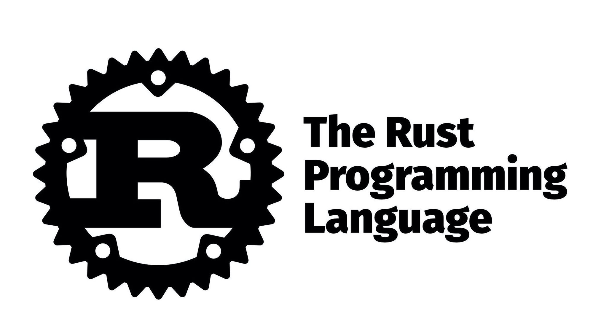

Rust es un lenguaje de programación compilado, de propósito general y multiparadigma que está siendo desarrollado por Fundación Rust. Es un lenguaje de programación multiparadigmático que soporta programación funcional pura, por procedimientos, imperativa y orientada a objetos.
Rust es rápido como el rayo y eficiente con la memoria: sin runtime ni colector de basura, puede sustentar servicios de rendimiento crítico, ejecutarse en dispositivos embebidos, e integrarse con otros lenguajes fácilmente.
El rico sistema de tipos de Rust y su modelo de propiedad (ownership) garantizan seguridad de memoria y seguridad de hilos, y te permiten eliminar muchas clases de bugs en tiempo de compilación.
Rust tiene una documentación genial, un compilador accesible con mensajes de error útiles, y herramientas de primera: gestor de paquetes y de proyecto integrado, soporte avanzado multi-editor con autocompletado e inspecciones de tipos, auto-formateador, etc.